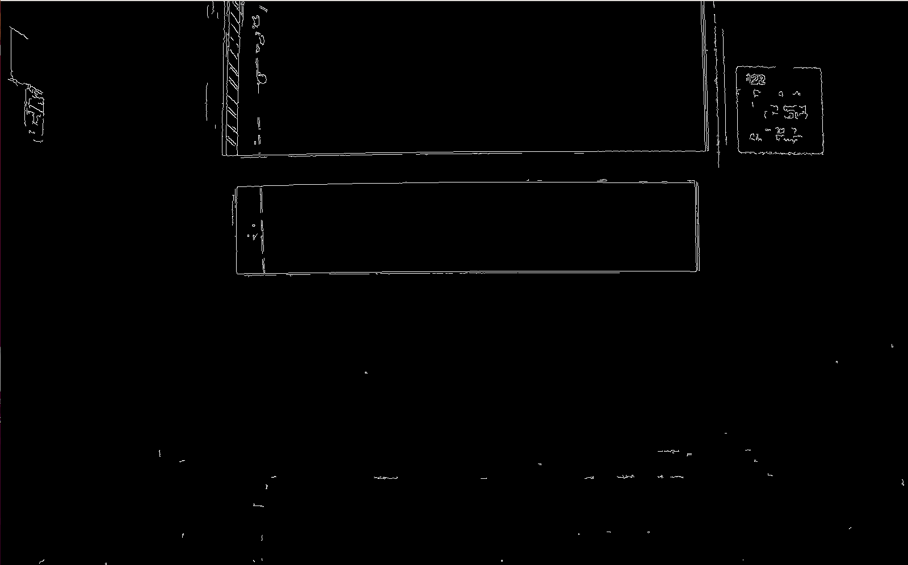
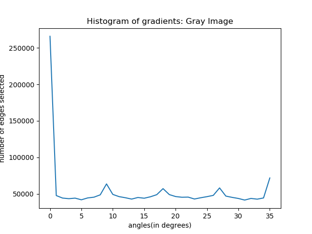
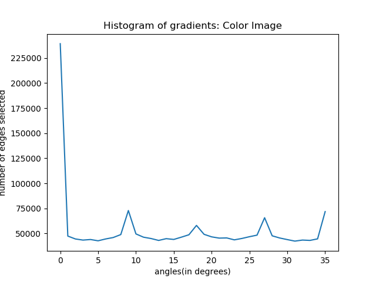
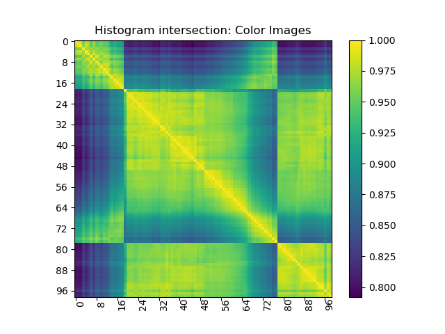
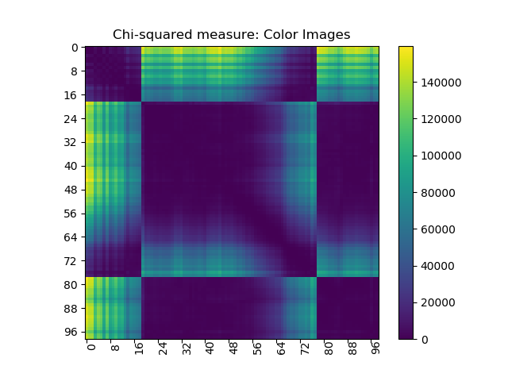

Following image shows the output of Canny edge detection operation on a sample gray image (ST2MainHall4001.jpg)
Threshold used: mivVal: 100, maxVal:200
Following image shows the histogram of gradients of a sample gray image (ST2MainHall4001.jpg)
Following image shows the histogram of gradients of a sample color image (ST2MainHall4001.jpg)
Following image shows the histogram intersection of gray edge histograms,
where large values correspond to high similarity(as depicted by the diagonal)
Following image shows the chi square measure of gray edge histograms,
where small values correspond to high similarity(as depicted by the diagonal)
Following image shows the histogram intersection of color edge histograms
where large values correspond to high similarity(as depicted by the diagonal)
Following image shows the chi square measure of color edge histograms
where small values correspond to high similarity(as depicted by the diagonal)
